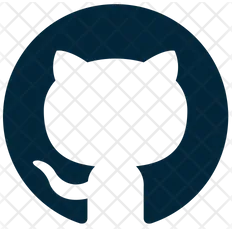
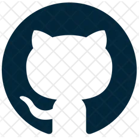

Jetson AI Lab Research Group
The Jetson AI Lab Research Group is a global collective for advancing open-source Edge ML, open to anyone to join and collaborate with others from the community and leverage each other's work. Our goal is using advanced AI for good in real-world applications in accessible and responsible ways. By coordinating together as a group, we can keep up with the rapidly evolving pace of AI and more quickly arrive at deploying intelligent multimodal agents and autonomous robots into the field.
There are virtual meetings that anyone is welcome to join, offline discussion on the Jetson Projects forum, and guidelines for upstreaming open-source contributions .
Next Meeting - 12/10
The next team meeting is on Tuesday, December 10 th at 9am PST - see the invite below or click here to join the meeting in progress.
Topics of Interest
These are some initial research topics for us to discuss and investigate. This list will vary over time as experiments evolve and the SOTA progresses:
| • Controller LLMs for dynamic pipeline code generation | • Fine-tuning LLM/VLM onboard Jetson AGX Orin 64GB |
| • HomeAssistant.io integration for smart home [ 1 ] [ 2 ] | • Continuous multi-image VLM streaming and change detection |
| • Recurrent LLM architectures (Mamba, RKVW, ect) [ 1 ] | • Lightweight low-memory streaming ASR/TTS models |
| • Diffusion models for image processing and enhancement | • Time Series Forecasting with Transformers [ 1 ] [ 2 ] |
| • Guidance, grammars, and guardrails for constrained output | • Inline LLM function calling / plugins from API definitions |
| • ML DevOps, edge deployment, and orchestration | • Robotics, IoT, and cyberphysical systems integration |
New topics can be raised to the group either during the meetings or on the forums (people are welcome to work on whatever they want of course)
Contribution Guidelines
When experiments are successful, ideally the results will be packaged in such a way that they are easily reusable for others to integrate into their own projects:
- Open-source libraries & code on GitHub
- Models on HuggingFace Hub
- Containers provided by jetson-containers
- Discussions on the Jetson Projects forum
- Documentation & tutorials on Jetson AI Lab
- Hackster.io for hardware-centric builds
Ongoing technical discussions are encouraged to occur on the forums or GitHub Issues, with status updates on projects given during the meetings.
Meeting Schedule
We'll aim to meet monthly or bi-weekly as a team in virtual meetings that anyone is welcome to join and speak during. We'll discuss the latest updates and experiments that we want to explore. Please remain courteous to others during the calls. We'll stick around after for anyone who has questions or didn't get the chance to be heard.
Tuesday December 10 th at 9am PST (12/10/24)
- Microsoft Teams - Meeting Link
-
Meeting ID:
264 770 145 196 -
Passcode:
Uwbdgj -
Outlook Invite:
Jetson AI Lab Research Group.ics
The agenda will be listed here beforehand - post to the forum to add agenda items. The meetings will be recorded so anyone unable to attend live can watch them after.
Past Meetings
November 12, 2024
Topics Covered:
- SMACC in Isaac Sim (Brett Aldrich, robosoft.ai )
- Kaya sim2real Agents (Kabilan Kb, DLI Instructor )
October 29, 2024
Topics Covered:
- ROSA Connector for Isaac Sim (Rob Royce, NASA JPL)
- The OASIS Project: A Technical Brief (Kris Kersey, Kersey Fabrications)
October 15, 2024
Topics Covered:
- HuggingFace LeRobot (Chitoku Yato)
- Stanley H1 Humanoid (Dave Niewinski)
October 1, 2024
Topics Covered:
- ReMEmbR: Long-Horizon Memory for Navigation (Abrar Anwar)
- Diffusion Policies , Shape LLM , 3D Encoders
September 17, 2024
Topics Covered:
- NASA JPL - ROSA (Rob Royce & Shehryar Khattak)
- LeRobot Walkthrough (Chitoku Yato)
- VLM Agent in Isaac Sim/ROS (Kabilan Kb)
September 3, 2024
Topics Covered:
- Edge NeRF's and nerfstudio (Johnny Núñez Cano)
- Review of OpenVLA results (Dustin Franklin)
- Oculus Interface for Jetson (Al Costa)
- TAO Toolkit 5.5
August 20, 2024
Topics Covered:
- GenAI ROS Nodes for VLM (Khannah Shaltiel)
- Isaac Sim and Orin Nano with Hardware-in-the-Loop (Kabilan Kb)
- Miru Edge Deployment Infrastructure (Vedant Nair)
August 6, 2024
Topics Covered:
- OpenVLA Fine-Tuning
- Gemma-2-2b (Asier Arranz)
- Ultralytics YOLOv8 (Lakshantha Dissanayake)
July 23, 2024
Topics Covered:
- Llama-3 Function & Specs
- OpenVLA with MimicGen
- Phi-3 Vision via ONNX (Jambo Chen)
- OStream GenRunner (Kerry Shih)
July 9, 2024
Topics Covered:
- OpenVLA Quantization ( openvla.github.io )
- visualnav-transformer ( robodhruv/visualnav-transformer )
- Florence-2, Holoscan, Grammars (Nigel Nelson, florence-2-vision )
- LLaMa-Factory ( hiyouga/LLaMA-Factory )
June 25, 2024
Topics Covered:
- Function Calling in Agent Studio
- Jetson Copilot (Chitoku Yato)
- Jetson Platform Services (Sammy Ochoa)
- On-device Fine-tuning (Nurgaliyev Shakhizat)
June 11, 2024
Topics Covered:
- Agent Studio
- HomeAssistant 2024.6
- AWS IoT Greengrass (Romil Shah)
May 29, 2024
Topics Covered:
- OpenAI-style Tools with NousResearch/Hermes-2-Pro-Llama-3-8B
- Jetson Copilot with jetrag
- whisper_trt for Orin Nano
May 15, 2024
Topics Covered:
- VILA-1.5 on Video Sequences
- Voicecraft Container ( Martin Cerven )
- JetBot / Nanosaur Updates for Orin Nano (Chitoku Yato & Raffaello Bonghi)
-
Controller LLM & Advanced Function Calling (
NousResearch/Hermes-2-Pro-Llama-3-8B) - RAG Samples with LlamaIndex (Chitoku Yato)
May 1, 2024
Topics Covered:
April 17, 2024
Topics Covered:
- Ollama Support for Jetson Devices
- Home Assistant Integration
-
jetson-containerUpdates - Upgrading JetBot with Orin Nano
April 3, 2024
Project Kickoffs:
Team Members
Below are shown some of the sustaining members of the group who have been working on generative AI in edge computing:
 
Dustin Franklin, NVIDIA

Dustin Franklin, NVIDIA
Principal Engineer | Pittsburgh, PA
( jetson-inference , jetson-containers )

 Nurgaliyev Shakhizat
Nurgaliyev Shakhizat
Institute of Smart Systems and AI | Kazakhstan
( Assistive Devices , Vision2Audio , HPC )
Kris Kersey,
Kersey Fabrications
Embedded Software Engineer | Atlanta, GA
( The OASIS Project , AR/VR, 3D Fabrication)
 Doruk Sönmez,
ConnectTech
Doruk Sönmez,
ConnectTech
Intelligent Video Analytics Engineer | Turkey
(NVIDIA DLI Certified Instructor, IVA, VLM)
Akash James,
Spark Cognition
AI Architect, UC Berkeley Researcher | Oakland
(NVIDIA AI Ambassador, Personal Assistants )
 Dana Sheahen, NVIDIA
Dana Sheahen, NVIDIA
DLI Curriculum Developer | Santa Clara, CA
(AI in Education, Jetson AI Fundamentals )
 Dave Niewinski
Dave Niewinski
Dave's Armoury | Waterloo, Ontario
( GLaDOS , Fetch , Offroad La-Z-Boy , KUKA Bot )
Elaine Wu,
Seeed Studio
AI & Robotics Partnerships | Shenzhen, China
( reComputer , YOLOv8 , LocalJARVIS , Voice Bot )
Patty Delafuente, NVIDIA
Data Scientist & UMBC PhD Student | MD
(AI in Education, DLI Robotics Teaching Kit )
Bryan Hughes, Mimzy AI
Founder, Entrepreneur | SF Bay Area
(Multimodal Assistants, AI at the Edge)
 Jesse Flot,
CMU Robotics Academy
Jesse Flot,
CMU Robotics Academy
Co-Director | Pittsburgh, PA
( Applied AI & Robotics , Autonomy Foundations )
Paul DeCarlo,
Microsoft
Professor | University of Houston
( Azure IoT , Video Analytics , Microsoft JARVIS )
 Mike Hansen,
Nabu Casa
Mike Hansen,
Nabu Casa
Voice Engineering Lead | Urbandale, Iowa
( Home Assistant , Piper TTS , Wyoming )
 Lakshantha Dissanayake,
Ultralytics
Lakshantha Dissanayake,
Ultralytics
Embedded CV Engineer | Vancouver, BC
( YOLOv8 , TensorRT , DeepStream )
Walter Lucetti,
Stereolabs
Robotics & Vision Engineer | Paris, France
( MyzharBot , ROS2 , GStreamer )
Raffaello Bonghi, NVIDIA
AI & Robotics Engineer | Manchester, UK
( Nanosaur , Panther , jetson-stats )
David Pearson,
ConnectTech
Embedded Systems Engineer | Ontario, CA
(Edge AI Systems, Vision/Language Models)
 Kabilan Kb, Roboticist
Kabilan Kb, Roboticist
NVIDIA DLI Ambassador | Tamil Nadu, IN
( ROS2 Tutorials , Autonomous Wheelchair )